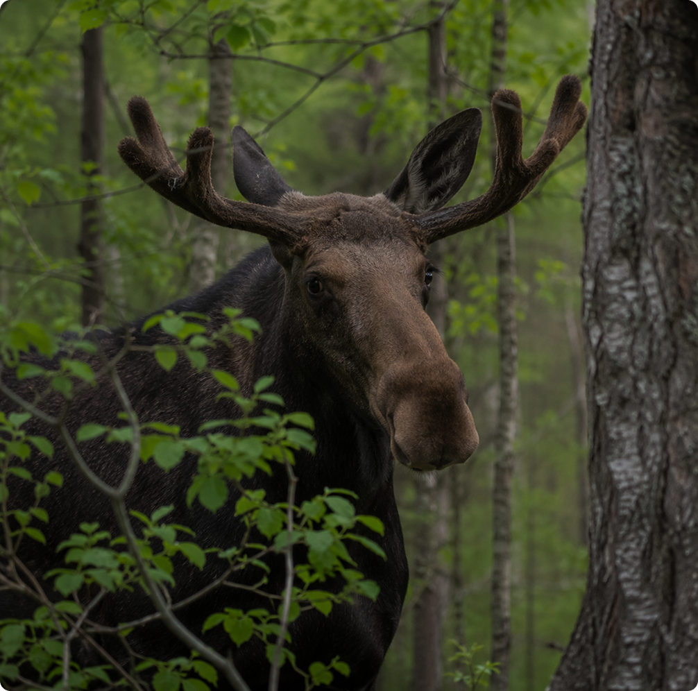
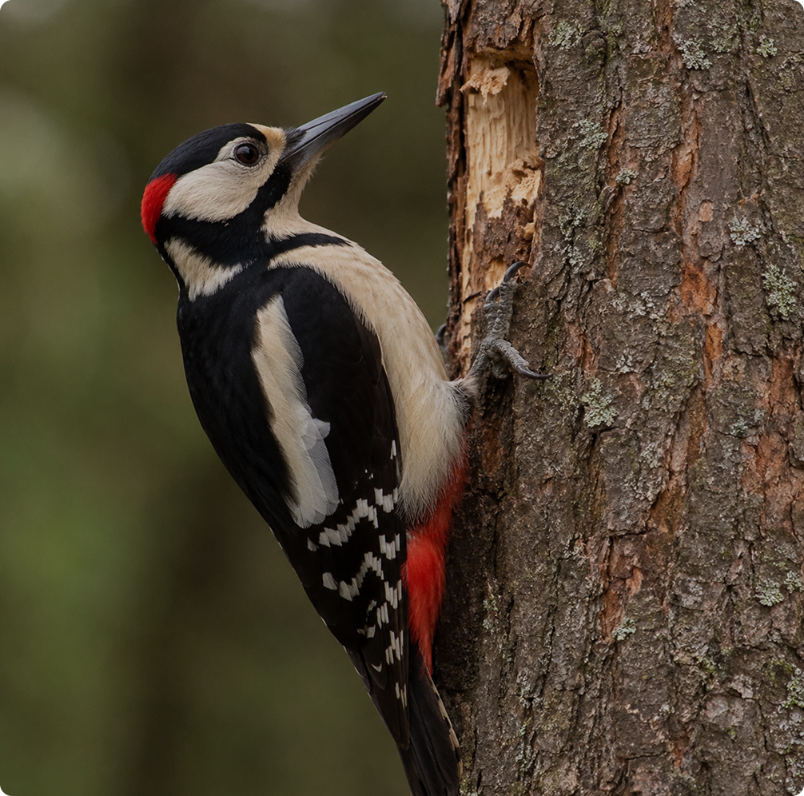
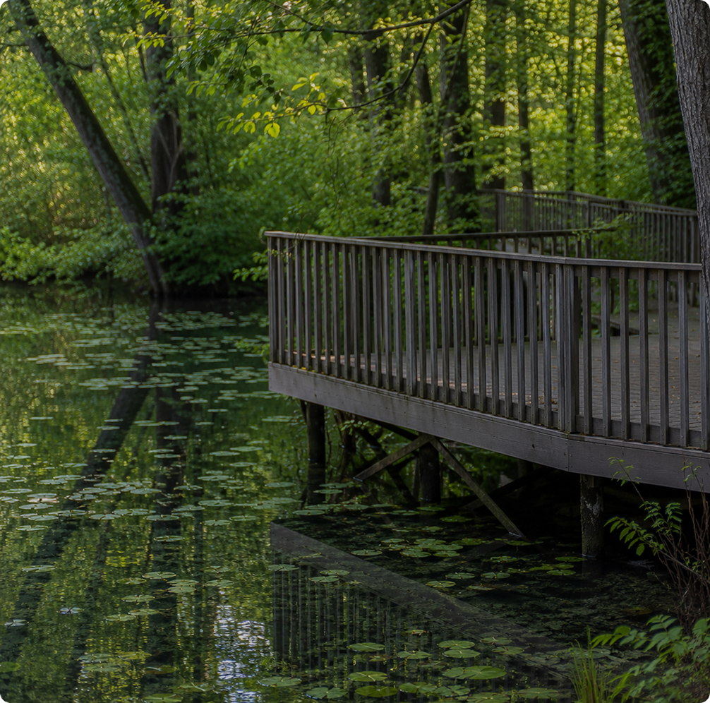
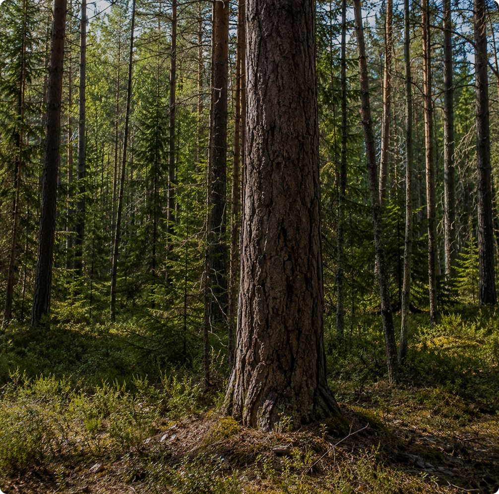
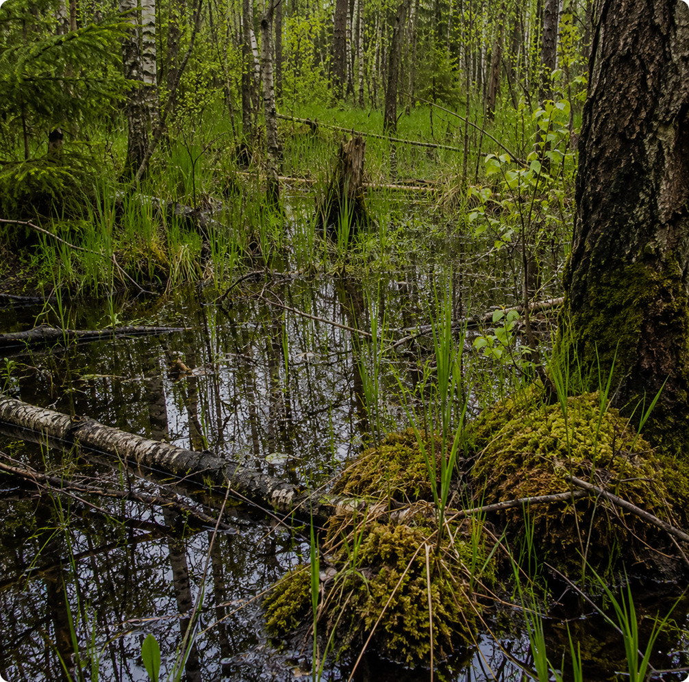

Тропа через Лосиный остров
Маршрут через тихие участки национального парка с длинными лесными тропами и заболоченными настилами. Подходит для тех, кто хочет увидеть менее освоенные участки лесов
6.8 км
Дистанция
2–2.5 ч
В пути
Глубокий лес
Маршрут
Кольцевой
Тип маршрута
Простая
Навигация
1
2
3
4
5
Вход в парк
0 км
Берёзовая аллея
1.4 км
Лесные настилы
3 км
Сосновый участок
5 км
Возвращение к старту
6.8 км
Лесная съёмка
Формат прогулки
Уединённый маршрут
Атмосфера
Утро или закат
Лучшее время
Что можно увидеть
Обитатели леса

Лось

Белка

Дятел
Особенности маршрута

Настилы

Сосняк
